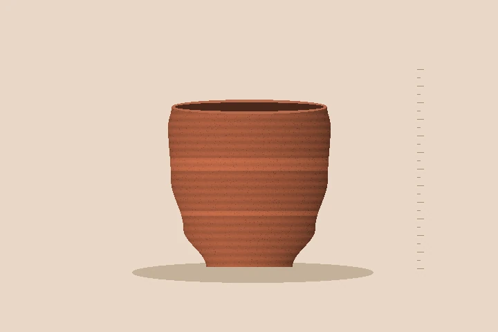

Kiln Room — Portfolio.exe
▁
作品 (W)
操作 (S)
关于 (A)
联系 (C)
GitHub
✳
KILN ROOM
Kiln
Room
.
陶器样本室
先选器形，再换一层釉。把三件器物放在同一盏侧光下，比较器口、肩线和足部的比例。
打开器形与釉色
GLAZE SHELF
原釉
样本
收口罐
深钵
细颈瓶
换一层釉
C:\Studio\Kiln
3 files · v1.0.0
器形与釉色 — Kiln
▁
Glaze shelf
.
器形与釉色
River Jar
收口罐

Low Bowl
深钵
Bud Vase
细颈瓶
八个主题桌面
平面设计
城市摄影
电子音乐
植物标本
建筑模型
陶器釉色
旅行邮票
星座图谱
恢复主窗口
打开作品窗口
×
 Kiln Room — Portfolio.exe
Kiln Room — Portfolio.exe
 器形与釉色 — KilnKiln Room — Portfolio.exe器形与釉色 — Kiln
器形与釉色 — KilnKiln Room — Portfolio.exe器形与釉色 — Kiln 旅行邮票
旅行邮票